CAMPAIGN
Modern Warfare4 Campaign
캠페인 모드에서는 한국 전쟁의 참호전, 뉴욕의 근접 전투, 파리의 숨 막히는 추격전, 뭄바이의 SAS 야간 작전, 그리고 점령된 영토를 탈환하기 위한 도시 전체 공격 등 다채로운 전투를 경험할 수 있습니다.
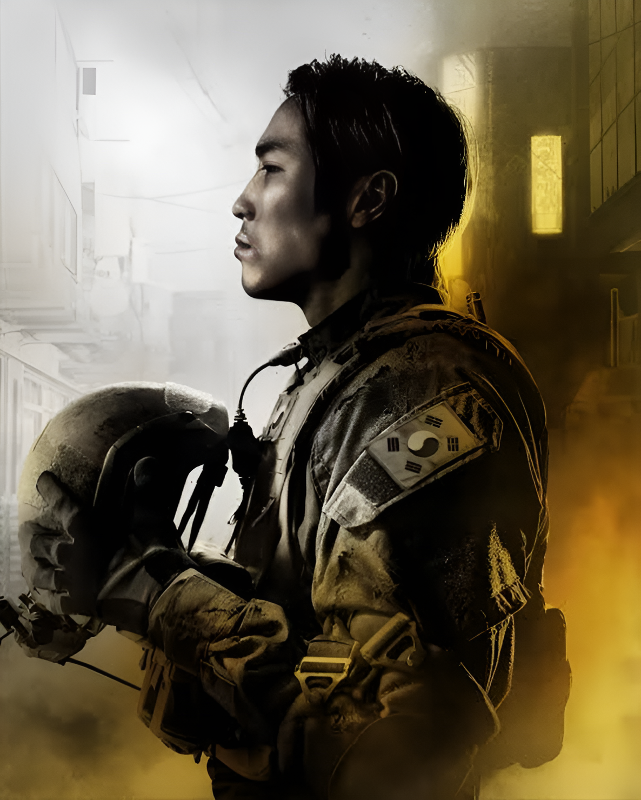
- 한국 전쟁터
- 북한이 남한을 전면 침공하면서, 평범한 순찰대는 생존을 위한 처절한 전투에 휘말리게 된다. 혼란 속에 갇힌 박 일병과 그의 부대는 무너져가는 도시, 견고한 진지, 그리고 잔혹한 반격을 헤쳐나가며 점령된 영토를 되찾기 위해 싸운다. 박상병과 그의 소대는 미군과 한국군 해병대 연합군과 함께 상륙 작전을 펼치며 조국을 지키기 위해 싸웁니다. 완전히 새로운 배경에서 펼쳐지는 지상 전투의 혼란, 압박감, 그리고 숨 막히는 긴장감을 경험해 보세요. 모던 워페어 시리즈 특유의 사실적인 군사적 배경을 바탕으로, 한국 전쟁은 더 큰 규모의 전쟁을 촉발하는 계기가 됩니다.
-
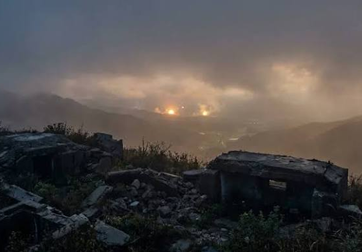
대혼란
한반도의 긴장이 고조되는 가운데 대한민국과 미 해병대 연합 분대가 하진시를 순찰합니다.
-
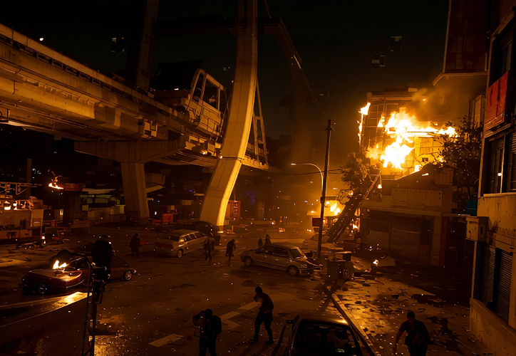
무너진 전선
북한의 침공이 하진시를 휩쓰는 가운데 연합군은 도시를 지키기 위해 싸웁니다.
- 전선 너머
- 특수부대 141이 해체되고 옛 동료들이 그를 쫓는 가운데, 프라이스 대위는 도망자 신세가 되어 한때 지켰던 규칙들을 저버린다. 복수심에 불타는 그는 세력 균형을 뒤흔들 수 있는 강력한 무기에 손을 뻗게 되고, 이는 그가 상상조차 하지 못했던 거대한 갈등을 불러일으킨다. 발레리아 가르자와의 불편한 동맹과 일련의 불법 작전에 휘말리게 된 프라이스는 점점 더 깊은 분쟁 속으로 빠져든다. 그의 비공식 임무가 한국 전쟁 배후 세력과 충돌하면서, 그는 전선 너머까지 영향을 미치는 그림자 작전과 과거의 적들과 얽히게 된다.
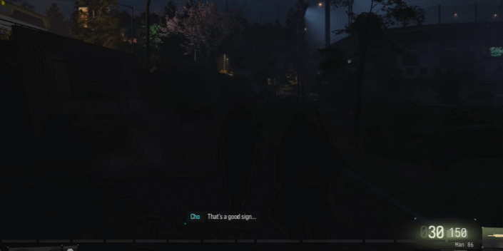
- 현대 전쟁의 규모
- 모던 워페어 4는 몰입감 넘치는 환경, 영화 같은 연출, 그리고 모든 장소를 생생하게 느낄 수 있는 디테일을 통해 더욱 깊이 있는 전투 경험을 원하는 플레이어를 위해 제작되었습니다. 무너져가는 한국의 도시부터 뉴욕에서의 근접 전투, 그리고 프라이스를 전 세계로 이끄는 비밀 작전에 이르기까지, 모든 전투는 전쟁의 규모가 커지는 와중에도 플레이어에게 직접적인 위협을 가합니다.
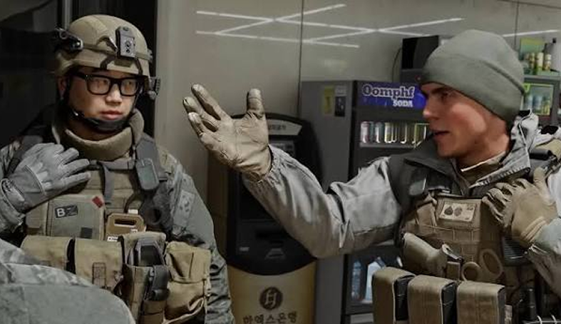
-
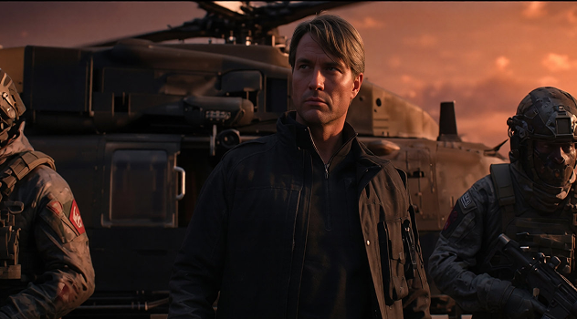
교신 종료 (Gone Dark)
프라이스와 발레리아는 아처에게 물건을 전달하기 위해 뭄바이에 도착합니다.
-
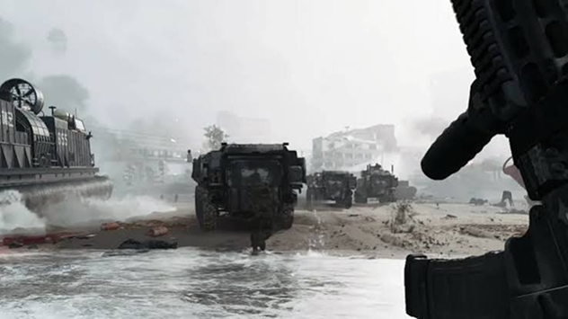
반격 (Counter Attack)
연합군이 하진시 탈환을 위해 대규모 반격을 개시합니다.
-
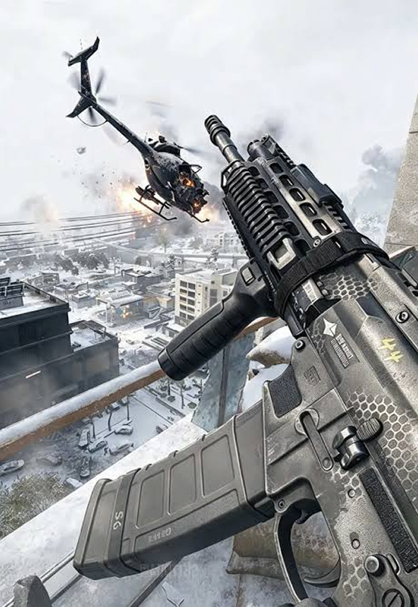
-
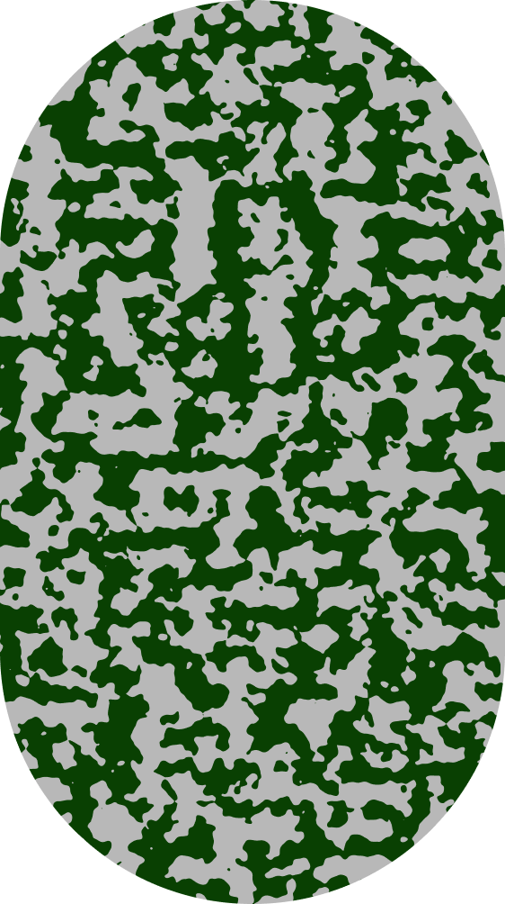
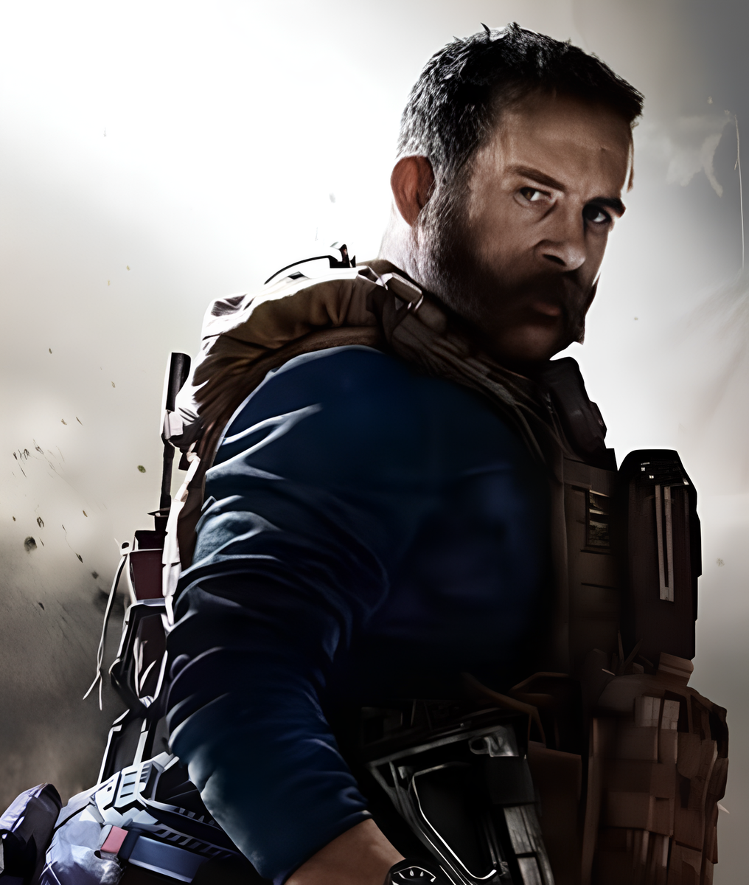
프라이스
박현준 이병과 함께 본작의 실질적인 주인공. 모던 워페어 4 시점에서는 국제 수배 중인 범죄자 신분이다
-
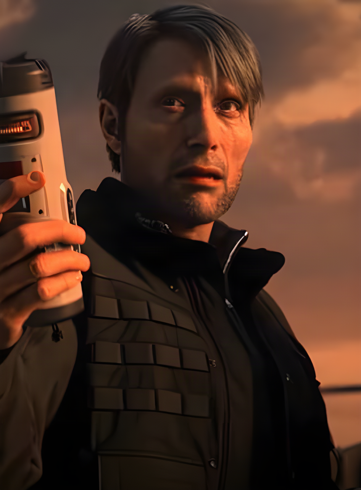
아처
현직 러시아 국방장관이자 뒤로는 유럽을 침공해 진정한 러시아를 만들겠다는 강경파 및 코니 PMC의 실질적 수장으로 본작의 흑막 겸 진
최종보스 -
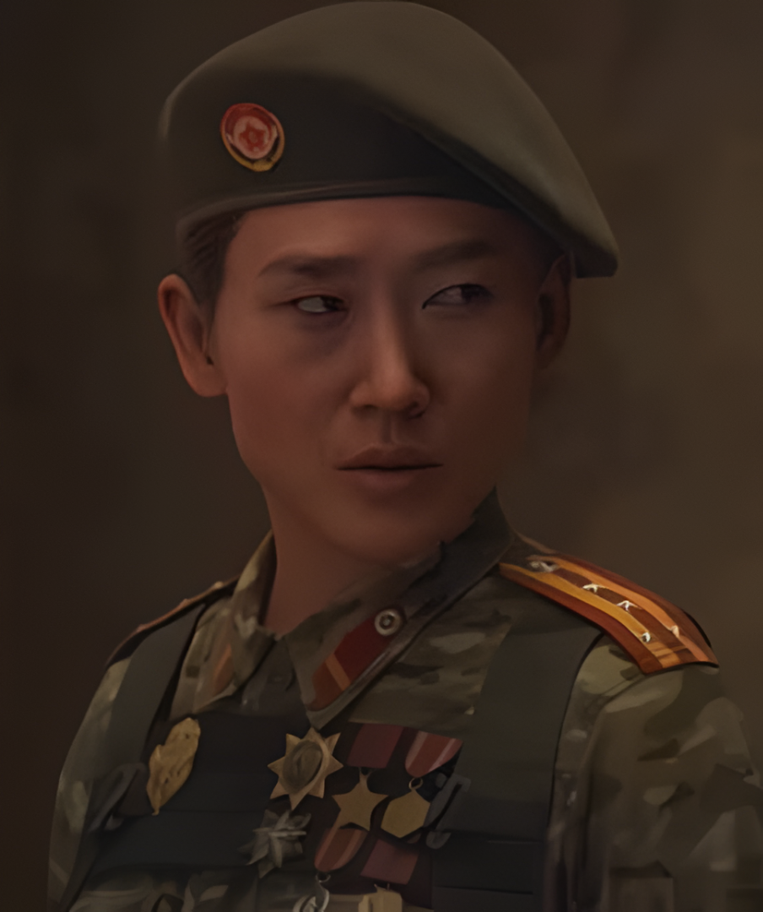
리주영
북한 최고지도자의 여동생 ,인민들을 무자비하게 탄압하고 죽이다 전쟁까지 일으킨 전체주의자 폭군 독재자